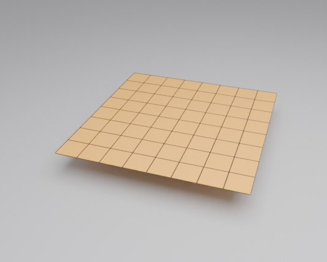
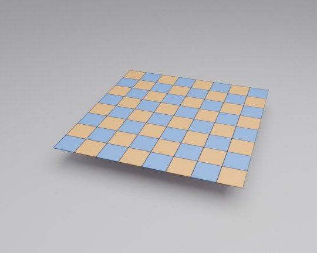

Bonus lesson
Checker Deselect
Checker Deselect turns a selection into an alternating pattern of selected and deselected elements. It works in Edit Mode. Find it under Select › Checker Deselect. The manual lists no shortcut key for it.


How it works
The manual explains that this tool only works if you already have more than one mesh element selected. It changes the selection so that only every Nth element stays selected, starting from the active one. The elements are vertices, edges or faces, depending on your active selection mode.
If the selection is in separate islands, the tool affects only the island of the active element. If there is no active element, it uses the island of the first element in the internal order.
The options
- Deselected: the number of deselected elements in each repetition of the pattern.
- Selected: the number of selected elements in each repetition of the pattern.
- Offset: moves the starting point of the pattern.
Read the manual page on Checker Deselect.
Try it
This exercise is our own suggestion and has not been run step by step in the GUI. Add a plane, enter Edit Mode and subdivide it a few times. Switch to Face select mode and select all faces with A. Choose Select, then Checker Deselect. Open the Adjust Last Operation panel and change Deselected, Selected and Offset to see how the pattern changes. Use Ctrl+Z to undo.